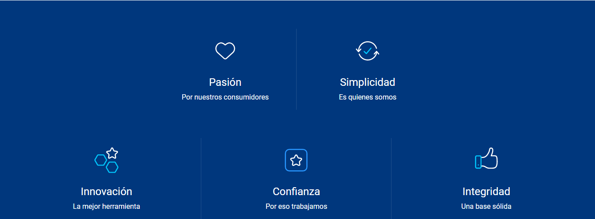

PERSONA
EMPRESA
CENTRO DE AYUDA
¿Que es Tigo?
En Bolivia operamos desde 1991. Desde nuestros inicios buscamos dar a nuestros
consumidores lo mejor, por eso hoy, 28 años después, estamos orgullosos de ofrecer
desde telefonía e Internet móvil de alta velocidad, Internet fijo ilimitado, Televisión por
subscripción, contenido de entretenimiento hasta servicios de billetera móvil y
servicios corporativos.
Nuestra política ha estado enfocada en democratizar el acceso a la tecnología digital
en toda Bolivia. Además, a través de inversiones permanentes ampliamos y
diversificamos nuestra infraestructura, jugamos un rol dinamizador en la economía y
aportamos al crecimiento del país.
Telefonía Celular de Bolivia S.A. (Telecel S.A.) es una filial del grupo empresarial
Millicom, proveedor líder de servicios de cable y móviles dedicado a mercados
emergentes en América Latina.
Nuestros valores
En TIGO Bolivia nos sentimos personas responsables con la sociedad y así lo demostramos en nuestros valores.
Misión
Construimos autopistas digitales que conectan,
mejoran vidas y desarrollan nuestras comunidades
Visión
Tener la mejor autopista digital y ser la primera opción
para nuestros mercados